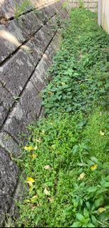
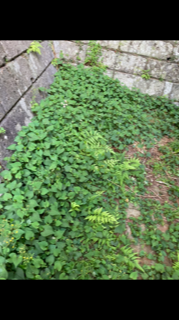

更新 2021 4/30
草刈り日報１
1,初めに
2021年4月27日に草刈りを行った。そこで感じたことを記録する。
①雑草の成長スピードが速い

以前草刈りを行ってから1，2か月ほどで雑草はかなり伸びた。おそらく以前の草刈り時に根をしっかりと取れなかったこと
が原因か。雨や日光によって手を加えずとも際限なく生えてくるので対策が必要か。

②両腕と腰の筋肉の消耗
雑草の根を引っこ抜くために軍手を付け雑草を引っ張るのだが、
腰を低くして長時間作業を継頭けていると疲労感や、筋肉の痛みを感じる。
また引き抜いた雑草を袋に詰めゴミ出しの日にゴミ捨て場まで運ぶとかなり手間がかかる。
作業をしている人の運動能力や感じ方に差異はあると思うが高齢者の方々にとっては
かなり負担の大きな作業なのではと感じた。